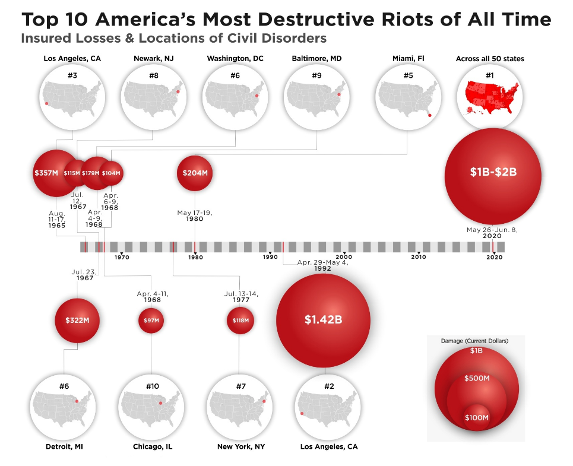

Warning: package 'ggplot2' was built under R version 4.3.3
Attaching package: 'plotly'
The following object is masked from 'package:ggplot2':
last_plot
The following object is masked from 'package:stats':
filter
The following object is masked from 'package:graphics':
layout
library(dplyr)
Attaching package: 'dplyr'
The following objects are masked from 'package:stats':
filter, lag
The following objects are masked from 'package:base':
intersect, setdiff, setequal, union
data <-data.frame(variable =c("Apple", "Africa's 25 GDP", "Netherlands GDP", "Google", "U.S. Dept. of Defence's Budget (2019)","Coca-Cola", "Phone Carriers", "NASA's Budget since 1998", "NASA","Alibaba", "All Cryptocurrencies", "Nike+Adidas", "Top 300 Movies", "Bitcoin", "General Motors",'Narcos wealth'),value =c(886, 839, 831, 751, 686, 678, 559, 451, 450, 416, 233, 182, 138, 138, 51,44),color =c("red", "orange", "green", "blue", "purple", "brown", "pink", "grey", "black", "yellow","gold", "darkgreen", "violet", "darkred", "skyblue","darkblue"))data <- data %>%arrange(value)p <-ggplot(data, aes(x =reorder(variable, value), y = value, fill = variable)) +geom_bar(stat ="identity") +labs(title ="Market Capitalization of several Entities",x ="Variables",y ="Value (in Billions)") +theme(axis.text.x =element_text(angle =45, hjust =1))ggplotly(p)
Interpretation:
The bar chart compares the market capitalization of various entities against a reference point, likely Apple, which has the highest market capitalization. Here’s a breakdown of the interpretation:
Reference Point: Apple likely has the highest market capitalization among the entities compared in the chart, serving as the reference point for comparison. Its market capitalization is represented by the tallest bar on the chart. Entities Compared: Other entities in the chart represent a diverse range of categories, such as companies from different sectors, countries’ GDPs, or other relevant categories. These entities are ranked based on their market capitalization values, with the lowest being the “Narcos wealth” at 44 billion USD. Comparison with Apple: Alibaba: The market capitalization of Alibaba is mentioned to be nearly half of Apple’s. This indicates that while Alibaba is a significant entity, its market capitalization is substantially lower compared to Apple. Other Entities: The chart allows for the comparison of market capitalizations of various entities relative to Apple. Entities with higher market capitalizations will have taller bars, while those with lower market capitalizations will have shorter bars. Insights from the Chart: The chart provides insights into the relative market capitalizations of different entities compared to Apple. It highlights the dominance of Apple in terms of market capitalization compared to other entities. It also showcases the wide range of market capitalizations across different entities, reflecting the diversity of the global economy. Overall, the chart effectively visualizes the market capitalizations of multiple entities, with Apple as the reference point for comparison, providing valuable insights into the relative sizes of different entities in the market.
library(plotly)data <-data.frame(variable =c("Apple", "Africa's 25 GDP", "Netherlands GDP", "Google", "U.S. Dept. of Defence's Budget (2019)","Coca-Cola", "Phone Carriers", "NASA's Budget since 1998", "NASA","Alibaba", "All Cryptocurrencies", "Nike+Adidas", "Top 300 Movies", "Bitcoin", "General Motors",'Narcos wealth'),value =c(886, 839, 831, 751, 686, 678, 559, 451, 450, 416, 233, 182, 138, 138, 51,44),color =c("red", "orange", "green", "blue", "purple", "brown", "pink", "grey", "black", "yellow","gold", "darkgreen", "violet", "darkred", "skyblue","darkblue"))data <- data[order(data$value), ]p <-plot_ly(data, type ='scatterpolar', theta = data$variable, r = data$value,fill ='toself',line =list(color = data$color),marker =list(color = data$color)) %>%layout(title =list(text ="Market Capitalization of several sectors against apple", x =0.5, y =0.95, xanchor ="center", yanchor ="top"), polar =list(radialaxis =list(visible =TRUE, title ='Value (in Billions)')),margin =list(t =100)) p
No scatterpolar mode specifed:
Setting the mode to markers
Read more about this attribute -> https://plotly.com/r/reference/#scatter-mode
A line object has been specified, but lines is not in the mode
Adding lines to the mode...
Interpretation:
The radar chart compares the market capitalization of various entities against a reference point, likely Apple, which has the highest market capitalization. Here’s a breakdown of the interpretation:
Reference Point: Apple likely has the highest market capitalization among the entities compared in the chart, serving as the reference point for comparison. Its market capitalization is represented by the tallest bar on the chart. Entities Compared: Other entities in the chart represent a diverse range of categories, such as companies from different sectors, countries’ GDPs, or other relevant categories. These entities are ranked based on their market capitalization values, with the lowest being the “Narcos wealth” at 44 billion USD. Comparison with Apple: Alibaba: The market capitalization of Alibaba is mentioned to be nearly half of Apple’s. This indicates that while Alibaba is a significant entity, its market capitalization is substantially lower compared to Apple. Other Entities: The chart allows for the comparison of market capitalizations of various entities relative to Apple. Entities with higher market capitalizations will have taller bars, while those with lower market capitalizations will have shorter bars. Insights from the Chart: The chart provides insights into the relative market capitalizations of different entities compared to Apple. It highlights the dominance of Apple in terms of market capitalization compared to other entities. It also showcases the wide range of market capitalizations across different entities, reflecting the diversity of the global economy. Overall, the chart effectively visualizes the market capitalizations of multiple entities, with Apple as the reference point for comparison, providing valuable insights into the relative sizes of different entities in the market.

library(plotly)data <-data.frame(Date =as.Date(c("1992-04-29", "2021-01-06", "1965-08-11", "1967-07-23", "1980-05-17","1968-04-04", "1977-07-13", "1967-07-12", "1968-04-06", "1968-04-04")),Location =c("Los Angeles, CA", "Washington, DC", "Los Angeles, CA", "Detroit, MI", "Miami, FL","Washington, DC", "New York, NY", "Newark, NJ", "Baltimore, MD", "Chicago, IL"),Insurance_Loss =c(1.42e9, 5e8, 3.57e8, 3.22e8, 2.04e8, 1.79e8, 1.18e8, 1.15e8, 1.04e8, 9.7e7))data$Insurance_Loss_Millions <- data$Insurance_Loss /1e6data$Insurance_Loss_Millions_Formatted <-format(data$Insurance_Loss_Millions, digits =10, nsmall =2)plot <-plot_ly(data, x =~Date, y =~Insurance_Loss_Millions, type ='scatter', mode ='lines+markers',text =~paste("Location: ", Location, "<br>Insurance Loss: $", Insurance_Loss_Millions_Formatted, " Million"),hoverinfo ='text') %>%layout(title ="Insurance Loss Over Time Period",xaxis =list(title ="Date"),yaxis =list(title ="Insurance Loss (Millions $)"),plot_bgcolor ="#f8f9fa", paper_bgcolor ="#f8f9fa") plot
Interpretation:
An individual insurance loss incident is represented by each point in the interactive visualization, which shows the pattern of insurance losses across time. Each event’s date is represented by the x-coordinate, and the loss amount expressed in millions of dollars is shown by the y-coordinate respectively. Through the in-depth review of the data, hovering over individual points provides further information like the precise location and amount of the insurance loss. Through the process of plot analysis, interested parties can recognize trends, pinpoint important incidents, and understand the extent and kind of losses. This understanding supports the development of insurance policies, resource allocation, and risk assessment—all of which are crucial risk management methods. All things considered, the visual aid is a useful means of concluding past insurance loss data that can be applied to help stakeholders create better plans for risk management and reaction to unforeseen circumstances.
`summarise()` has grouped output by 'Location', 'Lat'. You can override using
the `.groups` argument.
map_plot <-plot_ly(data_summarized, type ='scattermapbox', mode ='markers+text',lat =~Lat, lon =~Lon,text =~paste("Location: ", Location, "<br>Insurance Loss: $", format(Total_Insurance_Loss /1e6, digits =10, nsmall =2)," million"),hoverinfo ='text') %>%layout(title ="Total Insurance Loss by Location (in millions) between the years 1965 to 2001",mapbox =list(style ="open-street-map", zoom =3, center =list(lat =38, lon =-97) )) %>%add_annotations(text ="Time Frame",x =0.03,y =0.95,xref ="paper",yref ="paper",showarrow =FALSE )map_plot
Interpretation:
Data on insurance losses from 1965 to 2001 is presented in an informative manner in the following visualization. It displays marks on a map, each of which denotes an insurance loss location. At a given place, the size of each marker represents the overall insurance loss; larger markers denote higher losses. When viewers hover over a marker, important details like the name of the site and the overall insurance loss in millions of dollars are revealed, enabling them to comprehend the size and spatial distribution of losses in various areas. Viewers can find trends indicating recurrent incidents or locations prone to particular sorts of disasters by analyzing the map and identifying geographic areas with higher insurance losses.Users can zoom in, pan around the map, and acquire a deeper understanding of the spatial patterns and temporal trends of insurance losses with this interactive visualization that facilitates dynamic exploration. In the end, the visualization aids in risk assessment, strategic planning to lessen the impact of future insurance catastrophes, and informed decision-making for stakeholders in the insurance business, risk management, and disaster preparedness.